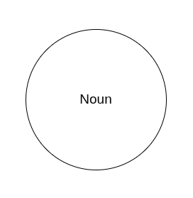
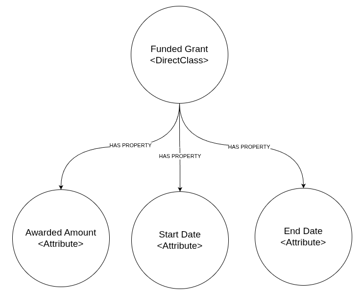
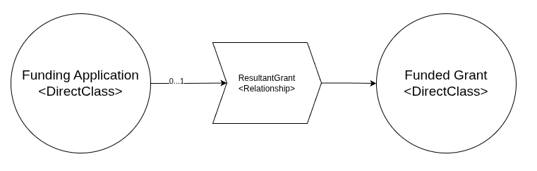
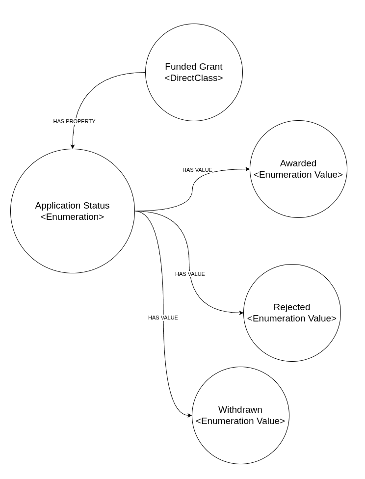
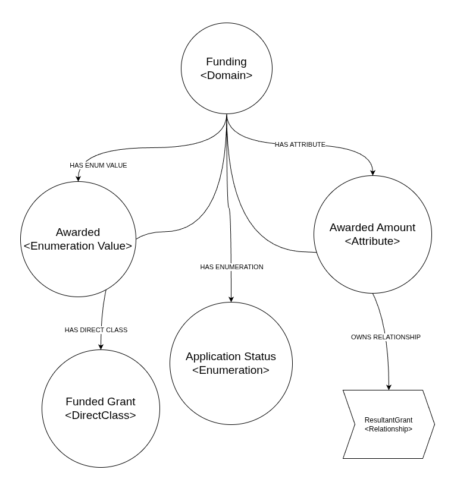
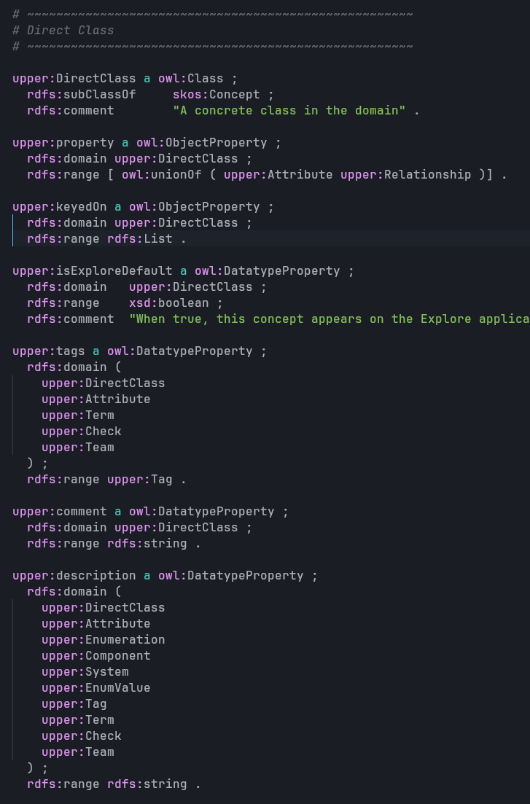

Part 2: Building a Language for the Organisation
Jeff Uren ★ 2026-07-06
This is the second article in a series about building a shared understanding of data, ontologies, and data architecture (UDA) in a large organisation that struggles with meaning.
"The limits of my language mean the limits of my world."
In the last article I argued that data isn't reality. It's a representation.
A recorded value only becomes useful when we understand what piece of reality it claims to describe.
If data represents reality... what exactly are we representing?
Tables, files, systems? No. We need to represent the organisation itself.
Forget the database for a moment
Imagine, just for a few minutes, that every database in Wellcome or your own organisation disappeared overnight.
- Oracle
- Workday
- Salesforce
- Monday
- Postgres
- Slack & Teams
- Outlook Emails
All of it, all the technology is gone. What survives?
The organisation itself.
People are still applying for funding, researchers still need to receive grants, and money still needs to move around. We still need to collaborate with other organisations, some of those applications will become awards, projects will still exist.
The things that matter don't disappear, only our way of recording them has.
That thought experiment changes a lot of things, but one of the primary things it suggests is that databases aren't actually the root thing we're trying to model. They're just one way of recording a world that already exists.
Start with nouns
Technical Note: We're going to be talking about all of this in fairly easy to understand, but non-technical terms, the implementation of this "organisational language" is done in RDF using OWL, SKOS, SHACL and other W3C standards. If we're going to describe an organisation, the obvious place to start isn't with tables. It's with nouns.

What are the things that exist?
- Funded Grant
- Application
- Organisation
- Person
- Payment
- Funding Scheme
- Transaction
- Project
These aren't database objects, they're concepts. They're things people already talk about every day. If someone asks:
"How many grants did we award last year?"
They're not asking about rows. They're asking about something that exists independently of whichever system happens to store it.
In the UDA we call these DirectClasses.
That's just our name for an organisational concept. You could call them entities, concepts, business objects, or something else entirely.
The name isn't really the important part of this, the important part is recognizing that they exist before the database ever does.
Now we ask what we know
Once we've agreed something exists, the next question is obvious.
What do we know about it?
A Funded Grant might have:
- an Awarded Amount
- a Start Date
- an End Date
- a Lead Organisation
- a Funding Scheme
- a Grant Reference
Notice that we still haven't talked about "columns". These aren't columns, they're characteristics, properties, things that can be true about a grant. In our system we call these Attributes and they relate to the DirectClass, or multiple DirectClasses through an edge named "HAS PROPERTY".

If tomorrow we moved every system from Oracle to something entirely different, these properties wouldn't suddenly change. The storage layer would, the meaning would not.
Relationships are first-class citizens
Organisations aren't collections of isolated objects, everything connects to everything else.
- Applications become Grants
- Grants produce Payments
- Payments belong to Organisations
- People submit Applications
- Researchers work on Projects
Those relationships aren't technical implementation details, they're actually part of the organisation itself.
Most databases treat relationships as something you infer from keys but database systems aren't robust enough to confer the meaning behind those relationships.
We need to make them explicit instead of hoping everyone understands that two IDs happen to match. So we need to describe the relationship itself.
- A Grant has a Lead Organisation
- A Grant originates from an Application
- A Payment contributes towards a Grant

The relationships carry meaning, the join is just the implementation of it. But the Relationship itself is a first-class citizen in our model, and it exists to extensively describe that meaning.
Not every value is free text
Some things can take almost any value, things like Awarded Amount, Grant Reference, Date, but others can't.
Application Status might only ever be:
- Draft
- Submitted
- Awarded
- Rejected
- Withdrawn
Those aren't just strings, they're part of the language of the organisation.
If one system records SUCCESSFUL, another records
AWARDED, and a third records A, we've
created three different dialects describing the same idea.
Instead of treating those differences as inevitable, we define the concept once and let the systems map onto it.

Again, we're modeling the meaning, not the storage.
Domains give concepts a home
As the model grows it needs some structure.
- Funding
- Finance
- People
- Investments
- Digital & Technology
- Climate & Health
These Domains aren't walled gardens though, they're more like neighbourhoods. They help us understand ownership, discoverability, and context.
A Grant primarily belongs to Funding, but it still relates to Finance, Organisations, and People.
Let's be honest, reality is never that clean, it doesn't segment itself into nice little neat, self-contained boxes, so we shouldn't try and impose that on our model of the organisation either.

So far we've ignored data
At this point we have something that feels suspiciously useful. We've described:
- the things that exist
- what we know about them
- how they relate
- the language we use to describe them
We've done all of that without mentioning databases, and that isn't an
accident. To reiterate, the model isn't trying to describe storage,
it's trying to describe the organisation.

Only once we've agreed on meaning does it make sense to ask where the recorded values actually live and that's where the second half of the UDA kicks in.
Isn't this just common sense
Yes, but mostly no. Most organisations don't have a shared understanding of the concepts that matter to them. Data Platforms more often than not try and catalogue every single system, and the meaning of the individual pieces of data within those systems.
For us, this is backwards. We're not actually all that interested in the varied and variegated systems that proliferate across the organisation, we're only interested in things that matter to the organisation on the whole. Across so many different systems, a large volume of the data isn't going to be operationally useful, and the meaning of the data is often only relevant within the confines of the application it comes from.
Crossing the bridge
Eventually every concept has to meet up with reality, somewhere there's a field that records the "Awarded Amount", and somewhere there's a code representing "Application Status", and even somewhere else there's an identifier that links a Grant to a specific Organisation.
But those values only matter because we've already agreed what they represent.
The UDA doesn't replace databases, or warehouses, or our DataMesh, it sits between them and the rest of the organisation.
One side understands storage, the other understands meaning.
The bridge between those two worlds is where the interesting work happens. That's where the fields become attributes, rows become instances of concepts, and system codes become shared organisational language.
Disconnected datasets begin to describe a single organisation instead of a collection of software products.
Next we'll talk about how we "marry" value to meaning.